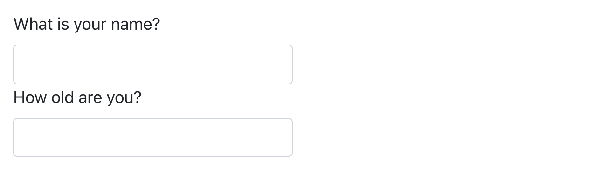

quarto::quarto_render("diamond-sizes.qmd", output_format = "docx")29 Quarto 格式
29.1 引言
到目前为止，你已经看到Quarto用于生成HTML文档。本 章简要概述了你可以使用Quarto生成其他多种类型的输出。
设置文档的输出有两种方式：
永久地，修改YAML头部信息:
title: "Diamond sizes" format: html暂时地，手动调用
quarto::quarto_render():如果你希望以编程方式生成多种类型的输出，这是很有用的，因为
output_format参数也可以是一个值的列表。quarto::quarto_render("diamond-sizes.qmd", output_format = c("docx", "pdf"))
29.2 输出选项
Quarto 提供了广泛的输出格式选择。您 可以在https://quarto.org/docs/output-formats/all-formats.html找到完整的列表。许 多格式共享一些输出选项（例如toc: true 用于包含目录），但其他选项是特定于某种格式的（例如，code-fold: true 将代码块折叠成一个<details>标签用于 HTML 输出，以便用户按需显示，这在 PDF 或 Word 文档中不适用）。
要覆盖默认选项，你需要使用扩展的format字段。例 如，如果你想呈现一个带有浮动目录的 html，你应该使用：
format:
html:
toc: true
toc_float: true你甚至可以通过提供一个格式列表来呈现多个输出:
format:
html:
toc: true
toc_float: true
pdf: default
docx: default如果不想覆盖任何默认选项，请注意特殊的语法（pdf: default）
要在一个文档的 YAML 中指定的所有格式上进行渲染，您可以使用output_format = "all"。
quarto::quarto_render("diamond-sizes.qmd", output_format = "all")29.3 文档
前一章主要介绍了默认的 html 输出。基 于这一主题，有几种基本的变体可以生成不同类型的文档。例 如：
The previous chapter focused on the default html output. There are several basic variations on that theme, generating different types of documents. For example:
pdf使用 LaTeX（一个开源的文档排版系统）生成 PDF 文档，你需要先安装它。如果您尚未安装，RStudio 会提示你。docx用于生成 Microsoft Word (.docx) 文档。odt用于生成 OpenDocument Text (.odt) 文档。rtf用于生成 Rich Text Format (.rtf) 文档。gfm用于生成 GitHub Flavored Markdown (.md) 文档。ipynb用于生成 Jupyter Notebooks (.ipynb)。
请记住，当你生成文档以与决策者共享时，您可以通过在文档的 YAML 中设置全局选项来关闭代码的默认显示：
execute:
echo: false对于 html文档，另一个选项是默认隐藏代码块，但可以通过点击来显示它们：
format:
html:
code: true29.4 演示文稿
你还可以使用 Quarto 来制作演示文稿。虽 然与 Keynote 或 PowerPoint 这样的工具相比，你在视觉控制上会受到一些限制，但自动将 R 代码的结果插入到演示文稿中可以节省大量时间。制 作演示文稿的方法是将您的内容划分为幻灯片，每个二级（##）标题都会开始一个新的幻灯片。此 外，一级（#）标题表示带有标题幻灯片的新部分的开始，该标题幻灯片默认居中显示在屏幕中央。
Quarto支持多种支持多种演示文稿格式，包括:
revealjs- 使用revealjs的HTML 演示文稿pptx- PowerPoint演示文稿beamer- 使用 LaTeX Beamer 的 PDF 演示文稿
您可以在https://quarto.org/docs/presentations阅读有关使用Quarto创建演示文稿的更多信息。
29.5 交互性
与任何 HTML 文档一样，使用 Quarto 创建的 HTML 文档也可以包含交互式组件。在 这里，我们介绍两种在 Quarto 文档中包含交互性的选项：htmlwidgets 和 Shiny。
29.5.1 htmlwidgets
HTML 是一种交互式格式，你可以利用 htmlwidgets 的交互性，htmlwidgets 是 R 函数，用于生成交互式的 HTML 可视化。例 如，请看下面的 leaflet 地图。如 果在网页上查看此页面，你可以拖动地图、放大缩小等。显 然，你无法在书中这样做，所以 Quarto 会自动为你插入一个静态的屏幕截图。
library(leaflet)
leaflet() |>
setView(174.764, -36.877, zoom = 16) |>
addTiles() |>
addMarkers(174.764, -36.877, popup = "Maungawhau") htmlwidgets 的好处是，你不需要了解任何关于 HTML 或 JavaScript 的知识就可以使用它们。所 有的细节都被封装在包内部，所以你不需要担心。
有很多包都提供了htmlwidgets，包括：
要了解更多关于 htmlwidgets 的信息，并查看提供它们的包的完整列表，请访问https://www.htmlwidgets.org 。
29.5.2 Shiny
htmlwidgets 提供客户端交互性，所有的交互都发生在浏览器中，与 R 无关。当 然这很好，因为你可以分发 HTML 文件而无需与 R 建立任何连接。然 而，这从根本上限制了你可以使用 HTML 和 JavaScript 实现的功能。另 一种方法是使用 shiny，这是一个允许你使用 R 代码而不是 JavaScript 创建交互性的包。
title: "Shiny Web App"
format: html
server: shiny然后你可以使用”input”函数向文档中添加交互式组件:
library(shiny)
textInput("name", "What is your name?")
numericInput("age", "How old are you?", NA, min = 0, max = 150)
此外，你还需要一个带有 chunk 选项context: server的代码块，其中包含需要在 Shiny 服务器上运行的代码。
然后，您可以使用input$name和input$age来引用这些值，并且当这些值发生变化时，使用它们的代码将自动重新运行。
由于 Shiny 交互是在服务器端发生的，所以我们无法在这里向你展示一个实时的 Shiny 应用。这 意味着你可以在不了解 JavaScript 的情况下编写交互式应用，但是你需要一个服务器来运行它们。这 引入了一个逻辑问题：Shiny 应用需要一个 Shiny 服务器才能在线运行。当 你在自己的计算机上运行 Shiny 应用时，Shiny 会自动为你设置一个 Shiny 服务器，但如果你想在线发布这种交互性，则需要一个面向公众的 Shiny 服务器。这 是 Shiny 的基本权衡：你可以在 Shiny 文档中执行任何可以在 R 中执行的操作，但它需要有人运行 R。
要深入了解 Shiny，我们建议您阅读 Hadley Wickham 的《精通 Shiny》，网址为：https://mastering-shiny.org。
29.6 网站和书籍
通过一些额外的基础设施，您可以使用 Quarto 生成完整的网站或书籍：
将您的
.qmd文件放在一个单独的目录中。index.qmd将成为主页。添加一个名为
_quarto.yml的 YAML 文件，该文件为网站提供导航。在 此文件中，将项目类型设置为book（书籍）或website（网站），例如：project: type: book
例如，以下_quarto.yml文件从三个源文件创建了一个网站：index.qmd（主页）、viridis-colors.qmd和terrain-colors.qmd。
project:
type: website
website:
title: "A website on color scales"
navbar:
left:
- href: index.qmd
text: Home
- href: viridis-colors.qmd
text: Viridis colors
- href: terrain-colors.qmd
text: Terrain colors对于书籍，您需要的_quarto.yml文件的结构非常相似。以 下示例展示了如何创建一个包含四个章节的书籍，并将其渲染为三种不同的输出格式（html、pdf 和 epub）。同 样地，源文件是.qmd文件。
project:
type: book
book:
title: "A book on color scales"
author: "Jane Coloriste"
chapters:
- index.qmd
- intro.qmd
- viridis-colors.qmd
- terrain-colors.qmd
format:
html:
theme: cosmo
pdf: default
epub: default我们建议您为网站和书籍使用 RStudio 项目。基 于_quarto.yml文件，RStudio 将识别您正在处理的项目类型，并在 IDE 中添加一个“Build”选项卡，您可以使用它来渲染和预览您的网站和书籍。同 时，你也可以使用quarto::quarto_render()来渲染网站和书籍。
有关 Quarto 网站的更多信息，请访问https://quarto.org/docs/websites ；有关书籍的更多信息，请访问 https://quarto.org/docs/books。
29.7 其他格式
Quarto提供了更多的输出格式:
你可以使用Quarto 期刊模板撰写期刊文章: https://quarto.org/docs/journals/templates.html。
你可以将 Quarto 文档输出为 Jupyter 笔记本，选项
format: ipynb: https://quarto.org/docs/reference/formats/ipynb.html。
在 https://quarto.org/docs/output-formats/all-formats.html 上你可以查看更多输出格式的列表。
29.8 小结
在本章中，我们为你展示了如何使用 Quarto 以各种形式展示你的成果，从静态和交互式文档到演示文稿，再到网站和书籍。
为了更深入地了解如何以这些不同形式有效地交流，我们推荐以下资源：
- 要提高你的演讲技巧，请尝试阅读《Presentation Patterns》一书，作者是 Neal Ford、Matthew McCollough 和 Nathaniel Schutta。该书提供了一系列有效的模式（低水平和高水平），你可以应用这些模式来改进你的演讲。
- 如果您进行学术演讲，您可能会喜欢 Leek group guide to giving talks。
- 我们还没有亲自学习过，但我们听说过 Matt McGarrity 的公共演讲在线课程评价很好：https://www.coursera.org/learn/public-speaking。
- 如果你正在创建许多仪表板，请务必阅读 Stephen Few 的《Information Dashboard Design: The Effective Visual Communication of Data》一书。它将帮助你创建真正有用的仪表板，而不仅仅是看起来漂亮。
- 有效地交流你的想法通常受益于一些图形设计知识。Robin Williams 的《The Non-Designer’s Design Book》是一个很好的起点。